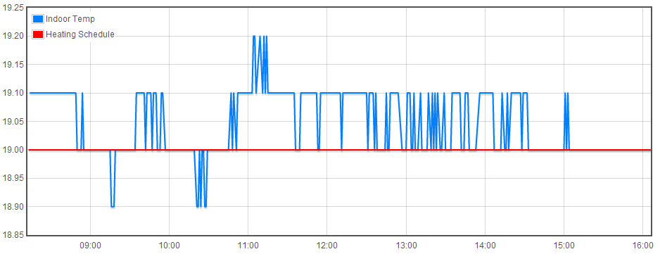

Very shortly, OEM will be releasing a RF connected 3 channel relay board which is intended to integrate within the existing emoncms line-up, and to be used for general power switching or as a replacement boiler/heating controller using it's 3 x 16A onboard relays.
Trystan is also making good progress on the underlying software in the form of a scheduler, possibly to run within emoncms.
With this in mind, I wondered if anyone had given thought as to the switching cycles required to drive a boiler efficiently, and how this could be interpreted in software?
Most decent Thermostatic Controllers cycle the boiler on and off in a sequence intended to maximise the use of the boiler's condensing mode to increase efficiency - instead of remaining on constantly. And also use variations of 'Time Proportional & Integral' control (TPI) which shortens the boiler firing period as the room temp nears target temperature, to reduce the effect of residual heat in the radiators continuing to raise the room temp further.
I fitted a TPI equipped thermostat at home some 15 years ago (it's nothing new!) and the 8hr screenshot below shows how accurately the thermostat holds the room temp to the target temp, increasing comfort and cutting energy wastage. (The 'Indoor temp' feed is a emonTH mounted next to my Danfoss thermostat, and the 'Heating Schedule' is the target temp fed via my node-red basic scheduler).
Without such features, the hysteresis in the system would create a hunting effect resulting in discernable swings of room temp.
Is it worth giving this some early consideration?
Paul

Re: Controlling a boiler via emoncms
This is excellent timing as I'm just about to rewire our heating system, although my approach was going to be a bit ghetto - looks like I could be an early adopter of this instead :)
Re: Controlling a boiler via emoncms
Paul, alongside your temperature readings it would be interesting to see when the thermostat turned the boiler on and off.
Also a couple of observations and I'm not a heating engineer but a victim of changing regulations (we have some rental properties).
In the past, say 20 years ago, at least in the UK, CH boilers were indeed controlled through the use of a centrally placed thermostat but it seems with the introduction of the energy rating of houses for sale TRVs on radiators have been recommended (therefore necessary). So now we have one system which manages the whole house based on one room and another system which manages each room through the TRVs. In fact we had a boiler replaced the other day and the plumber insisted on fitting a room thermostat due to the regulations even though there were TRVs on all but the towel rail in the bathroom.
So essentially in many houses there are two systems trying to control the heating. I think what many people do in this situation is to whack up the temperature on the thermostat and let the TRVs do their job. If you don't you get randomly cold rooms in the rest of the house. So basically the thermostat is redundant and the boiler turns on and off according to the temperature of the returns from the rads.
Not of course that this would make the OEM board redundant as it would still be used for scheduling but people should be aware of just what the controller can do.
Essentially I'm assuming that the code in EmonCMS will allow us to set up a schedule of on and off times similar to a CH programmer as well I hope as being able to override the settings remotely (this is something I've been wanting to do for some time - would love to be able to turn on the CH when we're an hour away from home when we have been away). I was planning to use a one-wire board connected to an emonTx to do this.
I had planned to use a one-wire relay board connected to a emonTx to do this with some one-wire temperature sensors to monitor various temperatures, e.g. the feed temperatures to the underfloor and rad circuits as well as the returns. I ought to add that our system at home uses a heat bank fed by a gas boiler, solar thermal and PV, so the boiler only kicks in when the tank temperature drops to a preassigned level controlled by thermostats on the tank. I also need to improve this control so that the boiler doesn't kick in unnecessarily and already monitor the temperature of the tank through the emonTx that does the PV diversion (thanks to Martin's sketch).
So anyway, long post but I'm very interested to know what the plans are and if I can help in any way.
Edit: here is a 1 wire relay board from axiris, I thought I had earlier this year found a UK supplier but seem to have lost the link. http://www.axiris.eu/en/index.php/one-wire/1-wire-relay-card
Re: Controlling a boiler via emoncms
In my situation, I'm retrofitting wet underfloor to an existing radiator system which adds the complication that I need to wire in a second pump which comes on when the underfloor calls for heat, but doesn't come on with the main house stat (but either house stat or underfloor must be able to fire the boiler and main pump).
Since this will require some nifty wiring anyway, I figure it may as well use a controller I've developed myself and temperature etc. via emonTH (I buried a temperature sensor in the floor).
The only caution I would offer is that emonCMS for me is not particularly stable. Every month or so it will crash out (the Pi continues to gather RF packets and forward them to the .org, but local is KO'd). I wouldn't want to rely on it to drive the heating schedule unless there was an easy override.
Re: Controlling a boiler via emoncms
I don't have any problem with emoncms but I'm back level quite a bit.
For your ufh/CH/boiler logic you may want to have a failsafe wired with relays. I was planning to leave the existing heat bank control in place even when I move over to controlling via emoncms if the new functionality the guys have indicated they are working on can do what I need.
Re: Controlling a boiler via emoncms
Hi,
I'm also thinking that EMonCMS is not enough stable to control a heating system.
I personally used EmonCMS to understand how my boiler works. That a good starting point. In particular, I made sure that
- the water pump is not ON all the time
- the pump flow is not to fast/slow by monitoring the flow and return temperature
- the cycle of the heating temperature is correct (10K in my case)
By the way, there are a lot of things to take into considerations when designing a central heating controls:
First , you must first consider the type of heating demand itself. The demand is low/high ? Is there a lot of heat losses ? The demand may vary quickly with solar gains ? The thermal mass may absorb variations of internal temperature ? The temperature can/must be different in some rooms ? The temperature must be reduced at night ? ... I have no magical recipe but I just know that the ideal system is really not the same for an old building and a modern one.
Secondly, you must define the type of the targeted boiler : heating only or heating + DHW, condensing or not, constant water temperature or not, internal tank or not ...
Eric
Re: Controlling a boiler via emoncms
I think commercial systems learn the response of the building they are in, and use that to fine tune the call for heat. For instance, if you initially wait to hit target temperature before stopping the system and it continues to rise another 1C then next time you stop at target -1, etc.
Re: Controlling a boiler via emoncms
Which is fine of course if you live in one large room but of course houses are made up of many rooms all with different responses depending on temperature, outside conditions, sun, wind etc.
This is why I've never been sure about devices like Nest. It would be interesting to hear any experiences with devices like these and if they have any value.
Re: Controlling a boiler via emoncms
Having dabbled in this area once, many years ago, I think industrial systems learn on a 'per zone' basis. How you would apply this idea to a domestic setup without zone valves per room, I don't know.
And I think you'd not only stop short of the target temperature, but you'd also start applying heat later.
Re: Controlling a boiler via emoncms
My understanding is that when the room temp gets within 1deg of the room temp, the controller provides shorter boiler bursts, which decrease further as both room & target temps approach alignment, and thereby avoid overshoot. I presume that the reverse would also apply, ie, instead of waiting for a full 1deg drop, maybe fire the boiler for 10% of the normal period when the temp drops 0.2deg to maintain a steady room temp?
Paul
Edit - this link provides a basic description of TPS.
Re: Controlling a boiler via emoncms
Without going too far off topic...
Theres an interesting post in the Plumbers Forum regarding the relationship between the outdoor temp and boiler efficiency.
So if we are aware of the outdoor temp (emonTH/TX or api call), the boiler firing periods can then be manipulated in the control software to increase overall efficiency, by reducing the return temperature...
Paul
Re: Controlling a boiler via emoncms
Hi Paul,
If possible, avoid turning on a boiler for short periods. Short cycles maximize the thermal losses (in the boiler and in the pipes). It also dramatically reduces the life of the boiler.
If you want to reduce the return temperature, you can reduce the pump speed or reduce the supply temperature. This can be achieved by monitoring the external temperature
Eric
EDIT : More information here.
Re: Controlling a boiler via emoncms
You can also use weather compensation:
Link the FLOW temperature of the boiler to the outdoor weather. This is the equivalent of gain in a controller; the proportional "P" term.
If you get this spot-on then in any reasonably insulated building with sensible thermal mass you need no other form of control: winding down the flow temperature is enough to keep the building at 21C.
You then set another "heating line" (graph of flow temperature vs. outdoor temperature) for night setback an another for holiday mode. Night setback results in the building maintaining about 17C, and holiday mode about 5C. The time clock (scheduler) flips between the operating modes. This is the continental approach.
You can combine this with room stats if you like. Set the heating line higher than it needs to be, such pump/boiler always run for say half an hour in every hour. Then allow the room stat to "call for heat" as normal. The firing time (per hour) should remain pretty constant because you're still reducing the flow temperature (gain) as the outdoor temperature rises. This is worthwhile: it gives more flexibility over room temperature and it reduces the amount of time the pump is operational.
Eric: reducing the supply temperature will INCREASE the return temperature. In order to get a set amount of heat into the room, you need a fixed mean water temperature in the radiator. If you reduce the supply temperature then the return temperature will have to be higher to achieve the same heat input into the room (through higher pump speed/flow rate)
Any sensibly sized system will ALWAYS condense. You shouldn't be installing any central heating system that requires a flow temperature in excess of 55 degrees C even in midwinter. (1983 Swedish building codes) In this instance regardless of what you do with flow temperatures the boiler will always be operating in condensing mode.
The old 11 deg C temperature drop across radiators is no longer applicable. That was designed back when
-you had to AVOID condensing on coal boilers and oil boilers. (the sulhpur would create sulphuric acid and destroy the heat exchanger: non-issue with natural gas, modern low-sulphur heating oil, and stainless heat exchangers)
-you had to avoid BOILING the water in the system. (non pressurised and with pretty crappy control systems)
Hence 82/71C flow/return temperatures. Today you should design for 55/35C flow/return at design condition (coldest day in 10 years) and operate it at whichever flow temperature below 55C and pump speed combination give the lowest overall electricity usage whilst not short-cycling the boiler or compromising comfort.
Hot water use (with a combi boiler) hammers them FAR more than any heating control would mind you, so I really wouldn't worry too much about boiler life; only boiler efficiency. Remember to put a daily/weekly pump kick in there for the summer.
Re: Controlling a boiler via emoncms
That makes interesting reading Mark, and looking at your background especially makes your post a good source of reference.
As you will have no doubt already gathered, OEM is gradually moving from just monitoring, to making use of the data and actually controlling things, so it's good to have an early heads up and explore options for future development.
Paul
Re: Controlling a boiler via emoncms
There are a few things to do:
1) Scheduling.
When do you want which zones and at which temperature? Traditional options do this poorly: even when they do offer programming their user interfaces are so clunky and limited in capability that it takes a determined person to optimise the heating schedule.
Best case? You set a "base schedule" with conservative (cold) night setback and day occupied times/temperatures, and make use of the "advance" or "extra hour" buttons to extend the day occupied temperatures if your schedule varies. Good luck deciphering that on your typical Honeywell/Siemens product with black and white LCD and four buttons. Even better luck convincing the nation to do it.
Products like Nest and Tado do a much better job of this. The Nest tries to guess your schedule: a learning thermostat for people who don't want to programme their own. It would drive me mental, but it's great for iPhone users. Tado makes programming a complex schedule easy and augments it with smartphone based geolocation stuff. It would confuse an iPhone user, but I like it.
Both products have good gateways to the internet.
Climote is an Irish product that uses traditional time clock skeumorphs to control two heating zones and hot water via traditional zone valves. Connectivity to the outside world is via a built in SIM and 3G modem. (hefty subscription charge) Interesting but not worth more than a Nest or Tado. (sslicker; more functional; no subscription charges)
2) Zoning.
Do you want one single temperature zone or many separate ones? In a small, well insulated, zoned bed flat a single zone with a TRV to limit bedroom temperature is fine. In houses you need at least two zones because living and sleeping areas want to be different temperatures and a TRV usually isn't enough to achieve this. If rooms are multi-purpose (study bedrooms being the common one) then you want individual time/temperature control for each room. This gets more important as the house is of poorer quality (poor insulation and airtightness) and usage (either schedules or number of occupants) is more irregular.
Nest and Tado don't even attempt to do zoning. You want more zones? Install a zone valve and a separate Nests/Tados for each one. £sillymoney.
Products like Honeywell Evohome and EQ-3 MAX! have individual zone valves for each radiator. The Honeywell product has beautiful actuators (compact, silent, etc) and can call for heat from an individual home boiler set up in the UK fashion. Unfortunately the internet gateway is an absolute load of rubbish (unable to maintain connectivity) and both the in-home user interface and the web/smartphone apps are unusable rank amateur efforts. Luckily Honeywell provide IFTTT functionality, otherwise it would be totally unusable.
The EQ-3 MAX! product is designed for communal heating systems and continental systems where there is no call for heat. (these systems sense return temperature, and decide whether or not to fire the boilers based on the return temperature) As such you can't use it in the UK. The reliability and user interfaces make the Honeywell product look professional, and there's no 3rd party integration.
Heatmiser made their name providing multi-zone controls for showhomes via UFH actuator heads and traditional zone valves; a market that the major players couldn't be bothered to cater for. (continentals with UFH install it in well insulated homes of decent size, such that there's negligible cost to continuous heating and you don't need to use rooms for multiple purposes: passive houses don't need complex controls, only the crazy UK market demands products like Heatmiser) Heatmiser have yet to release a product secure enough to connect to the internet: their existing product line is completely open and relies on 3rd party firewalls for security.
3) Temperature control.
Easy with high thermal mass, well insulated homes: they're kept warm 24/7/365. Easy with low thermal mass homes with fast-response heating systems: the US timber frame plus air conditioner/heat pump market. Radiators are a little trickier. Underfloor heating in poorly insulated homes is a nightmare.
Nest is a crude thermostat with hysteresis and an anticipator but works well in the US timber frame plus air conditioner/heat pump applications. Hysteresis thermostats work well when paired with weather compensation: the gain control as described in the previous post (all handled by the boiler setting its own flow temperature) makes their job very simple. Nothing on the market works well with underfloor heating in poorly insulated homes. Don't do it kids, even if it looks cool on TV. Spend the cash on insulation instead.
4) Boiler control.
Honeywell tried and failed to unify the heating industry with Opentherm: the idea was that the central thermostat could set flow temperatures, manage the boilers/pumps etc. Never happened. Instead the boiler manufacturers - led by the (more demanding) continental market rather than the UK market - have designed standalone controls that manage the boiler/circulation pump and handle weather compensation, and can do this either in complete isolation (sensing on return temperature alone: not compliant with UK building regs) or in conjunction with a call for heat on volt-free connections. The UK market gets whatever the continentals had 10 years ago.
Boiler manufacturers have attempted to design their own consumer-facing controls. Few are worth considering.
The "ideal" system would be a Nest/Tado type user interface, with Evohome style zoning, leaving the "heat source" do "do it's thing" and with a bunch of APIs to allow the user to do as they pleased.
Take a look at OpenTRV. It is the future for single home applications. ;-)
http://opentrv.org.uk/
https://www.youtube.com/watch?v=x1xR1CiCzvg
OEM probably fits into the Heatmiser customer base: catering for all the demanding customers with awkward use scenarios. I'd say it's worth considering the OpenTRV platform: they're pros at security and suchlike, then plumbing the OEM control and user interfaces/automation scripts into their API.
OEM becomes Nest/Tado. OpenTRV provides the Evohome zoning and the gateway. OEM does a bunch of IFTTT type scripted automation, but more powerfully/on a faster dev cycle than IFTTT will allow.
Re: Controlling a boiler via emoncms
To add: the temperature stability of your TPI installation in the initial post is seriously impressive technically.
Question: do you need it?
Attached: a trace from a boggo basic hysteresis controller; EPC D house; non-condensing boiler operating at ~70/60C flow/return. (uneconomic to improve the heating system or the insulation further)
The cool down cycle gets longer each time as the masonry (starting the day at <17C) absorbs the heat from the air in the room. On the 3rd and 4th cycle you get very minor overshoots from the radiators and distribution pipework cooling after the thermostat has stopped calling for heat. Cooking an evening meal and a few people in the house on a Saturday night is responsible for the longer overshoots.
I don't notice that +/- 0.5C at all: the hysteresis stat works pretty well actually; and fires only 5-8 times in 24 hours.
Is it worth going to town on temperature stability? How good is "good enough" anyway?
Kid brother's place (weather compensation on the boiler plus hysteresis stat via evohome; better insulation and airtightness) is firing two or three times per day. Cooking, showering, and people in the home cause more temperature instability than really quite crude heating controls.
Re: Controlling a boiler via emoncms
Marko, thanks for a thorough tutorial and view of some of the current market trends. Glad to hear that radiator balancing isn't needed in modern systems, I could never understand how you could achieve this. Also the view on Nest, which matches what I intuitively believed.
Also great to hear more pragmatism. We live in a '50s detached house built in 9" solid brick with a full height cavity wall extension on one side and a 3/4 height modern well insulated extension on the other side. Rads in the old part and ufh in the modern part. The south facing back of the house is floor to ceiling glass so on sunny days absorbs a huge amount of heat. Managing everything to within a few degrees would be great!
So for me, accuracy of control isn't the most important thing, what's important is the ability to see what's actually going on and to develop algorithms to 'intervene' in the control under certain circumstances. Oh and a neat way of managing things remotely.
Re: Controlling a boiler via emoncms
And back to the OP. Paul, when do you and Trystan expect to be releasing the board?
If it's going to take a while I may go down the 1 wire route.
Simon
Re: Controlling a boiler via emoncms
Radiator balancing IS required on modern systems, but rather than fixing the base flowrates through each rad and using mechanical TRVs to 'tweak' them in accordance with solar gain, you're using an electronic TRV to do both jobs.
Your 1950s base with an addition every three decades is classically awkward to manage. Sounds like you might need better architecture in addition to heating controls: either more roof overhang (summer shade but winter direct sun), a pergola with nice vines (again summer shade but winter sun), or a charleston style wrap-around balcony etc.
Sadly too many "architects" are just stylists these days, with no clue at to the building physics implications of features that were invented for function not just looks. Grand designs has much to answer for!
Control strategy: separate the UFH and radiators into two zones (minimum) and control separately. Rads can run a traditional hysteresis thermostat and crude weather compensation. UFH wants to run weather compensation with two inputs: predicted outdoor temperature tomorrow and predicted solar gain tomorrow (or at least 8 hours ahead if not 24) then set the slab temperature to suit.
A parge coat for aitrightness and 200 mm of EPS on the outside of the house would make your life easier too; as would MVHR to even out the temperature distribution/cool the over-glazed/under-shaded extension.
Re: Controlling a boiler via emoncms
Hi,
I totally agree but you may also want to reduce the amount of heat delivered at a given moment. In France, I see many people making their radiators works at 90/70°C whereas 65/50 or 50/40°C would be ok. Most central heating system are oversized.
When it's possible (not too much thermal losses, boiler ability to provide a cooler flow, radiators big enough, ...) , it improves the heating efficiency and the thermal comfort.
That's is what I meant when saying that one can reduce the return flow by reducing the supply temperature. Obviously, the pump and flame activity will be affected and not necessary as expected ...
Eric
Re: Controlling a boiler via emoncms
Paul, when do you and Trystan expect to be releasing the board?
The board is a joint effort between Trystan & Ken Boak (who you may recall designed the Nanode).
Ken was expecting to release some beta boards very shortly, but I haven't heard anything for a couple of weeks now.
I do know however that Trystan has made significant progress with the control software, albeit not yet ready to release.
Paul
Re: Controlling a boiler via emoncms
Hi
I have followed this with great interest. I set up emoncms to monitor our central heating with a view to optimizing the settings on our existing heating controls for comfort and economy.
http://79.78.46.160/emoncms/ianeagland&id=1
We have a cottage built around 1650 with very thick Cobb walls. We have fitted UFH with individual room zones and very good insulation under the ground floor slab. The roof space has been fitted with wool insulation to the maximum thickness allowed by the construction. We realised some time ago the best thing to do was run the heating full time. The only real issue we have is hysteresis in the existing thermostats. It is our intention to change to a better control in the near future. At present we have wall mounted temperature sensors. I am wondering if we might get a more stable room temperature if we had sensors in the floor slabs. I would be interested if any one has any thoughts (or experience) on the best way to control UFH.
Regards
Ian
Re: Controlling a boiler via emoncms
Ian - I don't have a lot of experience but I built a new home in New Zealand 3 years ago and laid a 250mm concrete slab (twice as thick as normal) and ran hydronic underfloor heating pipes throughout. I places a temperature sensor deep inside the slab and use that to control my air-to-water heatpump which provides the warm water (approx 35C) for the heating.
What I have found is that once the slab heats up to temp (i.e. at the start of winter), which can take a couple of days, I only require one on/off cycle per day to keep it topped up. I only run the heatpump from 9pm till 7am as I have much cheaper electricity rates then. So every night at 9pm the heatpump fires up and will run anywhere from 3 to 10 hours, depending on how warm the slab gets. In the middle of winter it will run the full 10 hours (force shut off at 7am when cheap electricity ends) most nights, in the shoulder months as little as 3 hours.
I have the slab thermostat set to around 26-27C - although this is a fairly arbitrary value I think - that is the slab temp that keeps the house at a very comfortable level. It will depend how far the probe is from the nearest warm water pipe as to what temp best suits you.
The thermostat has built in hysteresis so it if set to 27C, will turn on at 26C and off at 28C. Due to the slow nature of this heating system, this hysteresis is enough to ensure the heatpump only ever turns on once a day. And because I went a little overboard with insulation etc the house temp at 8.30pm never drops below 20C.
Extremely happy with the system, but always interested to learn more about how others are using theirs!
Re: Controlling a boiler via emoncms
Hi guys I have arrived a bit late to this thread but I am very interested in using emoncms / scheduler for heating control.
My current system has been running for about a month & so far so good! It's using Rpi, emoncms low write, emonhub & scheduler, 8 zones mixed under floor (hot water) and radiators, all rooms independent temperature control. I hope to write a blog describing the system but in the mean time a few comments.....
Radiators..... all had Honeywell TRVs I changed the heads to thermal actuators (I used 230V but you can get 24v for those that don't want to mess with mains) wiring was a bit of a fag ... quite a few carpets & floorboards had to come up..... wife wasn't best pleased!.....
Adding relays to emontx is fairly straightforward using the ULN2803A interface chip (50p at RS). These have 8 channels, connect directly to ATmega328 outputs & have built-in fly back diodes for driving inductive loads so no extra components needed. The chips have darlington arrays completing the circuit to ground so the relays can have a separate power supply from the tx (common ground) ... any voltage up to 50v (I used 5v, 6A relays with a common power supply to the TX) They can drive 24v (DC) actuators directly without relays......On one tx I added 8 relays using a jeelabs output plug .... these little boards sit very nicely on node 3 of the emontx V2. They use an expander chip and a version of the ULN2803A ... it took me a little while to get the hang of programming the output plug but I will document this in the blog.....
Boiler cycling........ our boiler was 20 years old, non condensing..... It was still working but I decided however good the control it was never going to be efficient so I bit the bullet & changed it to a Greenstar Worcester CDi regular...... so far very impressed.... these boilers are self modulating...... you set the heating feed temperature & the boiler regulates the gas flow to keep the return temperature in the condensing range..... This makes boiler control very easy.... I also changed our 20 year old circulation pump for a self adjusting one.....
Temperatures are measured by TXs except where wiring was tricky & I used THs
I also had an old "Arexx" temperature logging system which also used 433MHz battery powered sensors. I was unable to hack these directly but they come with a web-connected base station which can send temperatures to emoncms. Trystan kindly added a few lines to input_model so that "input" or "feed" values could be automatically sent to packetgen & hence used as control variables....This seemed like a good idea at the time but....I think the system will be much more reliable if temperatures are measured directly by the emontxs doing the control or sent to them directly via THs.
Hysteresis......I have a separate module in emoncms which runs alongside scheduler. This has simple buttons which can turn rooms off or set them to auto via packetgen...This allows bedrooms to be in a single zone for timing but with individual off buttons On this room control module I have added hysteresis "set" which makes "hysteresis" a packetgen variable which is easy to change.... I also added a winter setpoint but this is not quite functional yet......
Scheduler....... This has 2 parts.. a standard emoncms module which has the interface & scheduler_run.php which is the control script (run from cron) My programming abilities are fairly limited... The scheduler Mk1 was based on a few sketched ideas I had which Trystan programmed (mostly in an afternoon!) I am very keen to see a Mk2 scheduler & it would be useful to have some feed back as to how Mk1 could be improved.
The current scheduler works fairly well on mobiles (Andriod & iphones).... its easy to flick through zones & any added buttons.....
For what it's worth here are a couple of screen shots of my scheduler (It's already slightly modified)
Only 3 out of the 8 zones are shown
The time is browser time at the moment (this was confusing me at first as the scheduler uses Rpi time & mine was originally set to UTC... ....an hour different from the browser......) The outside temperature is automatically displayed as long as you have a feed called "outside" All the zone temperatures are displayed as long as you have a feed name the same as a zone name...The buttons are self explanatory..... Times and setpoints can be changed for each day (at the moment there are 2 on / off times for each day ) The "boost" button .. push once for 1 hour, twice for 2, 3 times for 3 hours, 4 times its off! Built in timer counts down the minutes until it goes off
Times are set by "Time pickers" these are fairly easy to use on a mobile, but a bit fiddly to programme initially, setpoints are text entry
Having used the scheduler for a month or so it works OK but it could be improved & I am keen to help with the next version but it would be useful to have any suggestions for major changes before I try to persuade Trystan to do the reprogramming that I already have in mind!....
Richard
Re: Controlling a boiler via emoncms
when the relay node comes out 3 relay controllers won't be enough for my system. Its a historic system where the upstairs / downstairs / hot water each have their own control values for their flow of water.
I'm not using the hot water now as the hot water is done by thermodynamics. But at some point i want to heat the conservatory separately. I think this will mean I'd need 6 relays broken down into upstairs/downstairs/hot water/conservatory/pump/boiler.
As we don't use the boiler during the summer I still want to run the pump every week just to keep it from seizing up. hence the need for its separate controller.
Any plans for a more extendible controller?
Thanks
Re: Controlling a boiler via emoncms
Hi
If you need 6 relays you might as well build your own relay board (as long as you are happy with the mains side)
The emontx V2 has 6 spare outputs (7 if you include the LED) as identified by Robin http://openenergymonitor.org/emon/node/2066#comment-10976
If you use a ULN2803A interface chip (it has 8 channels obtainable from Farnell or RS) this chip can be connected directly to ATmega328 & will drive relays directly (there are on board fly back diodes for inductive loads) I used Finder 32.21.7.005.2000 relays (These have 5V coil, sp, 6 amp at 240V ac - fine for boiler/pump/zone valve control) from RS or Farnell. Both the driver & relays can be mounted on Vero board (as long as you are careful to separate the mains from the low voltage)
I have used 18 of these relays in my system, driven from ULN2803As - so far no problems!
Richard
Re: Controlling a boiler via emoncms
I design and install heating and ventilation control systems in commercial buildings.
Generally we operate the system on a demand based strategy. Each zone or device has its control setpoint which is controlled via a PI control loop (no need for D, temperature doesn't move fast enough). From this output we take a demand back to the heat source/boilers to start.
The boilers are then sequenced and the duty rotated to maintain a boiler flow temperature setpoint.
Most new commercial condensing boilers now come fitted with the ability to modulate the boiler output via a 0-10vdc signal.
As a rule of thumb boilers are generally enabled for a minimum period of time to avoid causing a fault on the boiler.
What will be the most difficult is programming optimum start and stop control for the time schedule. I have seen it done wrong too many times!
Re: Controlling a boiler via emoncms
Hi Hatfieldr or something similar to http://www.ebay.co.uk/itm/New-8-Channel-5V-Relay-Module-Board-for-Arduino-PIC-AVR-MCU-DSP-ARM-UK-/151105724470
which is a 8 way relay (got one ages ago..)
I doubt i will be the only one needing more than 3 relays - as that would only do pump/boiler/one selector to decide whether the hot water goes to the heating or hot water. - Anyone else need more than 3 ?
Re: Controlling a boiler via emoncms
I do, just bought a 4 channel 5v opto-isolated board for £10. Which coupled with an esp8266 03 board and USB micro adapter and a 3.3v powerpod will make an extremely cheap device with direct wifi., so controllable through Openhab or freeboard.
I think this combination makes anything rfm12b +arduino obsolete. Just my opinion of course.
I'm following harazinov and a couple of others as they get this all working with MQTT etc. Anyone else trying this route?
Re: Controlling a boiler via emoncms
Do you have any links at all?
Re: Controlling a boiler via emoncms
Hi octagon,
I bought all these on eBay except the powerpod which is from Ciseco and I'm hoping will be man enough to do the job. So if you do a search on eBay you should easily find the other bits.
Most of them are a lot cheaper from HK or China but you would have to wait up to a month to have them delivered, so I bought from sellers with UK stock. If you don't mind waiting then you could build this for about a third of the price I have paid which so far is about £15 + £12 for the relay board.
The esp8266 in the 03 packaging is a bit odd in that it is 2mm spacing on the board eadge and not 0.1 inch which seems to be standard for prototyping boards, so I have purchased some 2mm male headers and this Uno prototyping board ->http://www.ebay.co.uk/itm/151545055046?_trksid=p2059210.m2749.l2649&var=450759605333&ssPageName=STRK%3AMEBIDX%3AIT
The board has an area of 2mm prototyping surrounded by 0.1 inch, so I can solder the 2mm headers onto the esp8266 package and then onto the board to connect to everything else.
The reason btw for selecting the 03 package is that it has a lot more i/o broken out, enough to drive the 4 channel relay board.
Martin Harizanov has a couple of recent blogs on what he is doing with the esp8266, not sure if you have seen these. He designs and sells PCBs to support his projects and says in one of the blogs that he intends to create a PCB with the esp8266 and from memory 4 SSRs so you may want to look at that. Again you should be able to find his blogs by googling his name
Re: Controlling a boiler via emoncms
From what I understand, Martin intends to sell the units from his shop, either very late January or into February. Not sure whether it will be PCBs, kits or ready assembled.
Paul
Re: Controlling a boiler via emoncms
All, very late to this forum I know, but want to add something regarding boiler return temps.
Firstly, as the plumbers formum link (by Paul Reed) says, the lower the return temp to the boilers, the better the condensing efficiency. So it may be worth while pursuing means to achieve this (although the savings won't be massive for small buildings).
Secondly, there is a natural means by which return temp will reduce. As a 2-port valve (e.g., a TRV) closes down, the return temp from the emitter will actually decrease. This is because by throttling the flow, the water now has more time in the radiator to cool down.
There problem comes with typical domestic arrangements which have a bypass designed to prevent the pump working against a dead head when all TRVs have closed. This also provides a means of mixing in flow water into the return, raising the net return temperature. So important to keep the bypass valve open as little as possible.
Weather compensation has it's part to play in this process, but is often an expensive addition. It's main use, in my view, is to improve controlability of the radiators. If a room heat loss requires the radiator to work at low capacity (say 25%), the TRV may struggle to effectively throttle 70degC water without causing massive overshoot. If the flow temp is only at 50degC, the TRV can allow a bit more flow and stay in authority better.
Re: Controlling a boiler via emoncms
Another Latecomer, What I would like to have in a control system is,
1. when the boiler fires it operates at a high flow temperature (70 C) until the return temp increases ( thus indicating that the building temperature is almost satisfied.
2. The boiler flow temp is then reduced (in 5 C ) steps until the return flow temp is at a suitable temp to maximise condensing in the boiler.
3. If the return temp does not reduce then turn the circ pump off for a fixed time (10 minutes and check if heat is required (signal from room stat)
This system reduces the time to heat a building and then reverts to the lower temperature "ECO" mode if more heat is required. In effect it will behave similar to a boiler that can modulate.
????
Re: Controlling a boiler via emoncms
when the boiler fires it operates at a high flow temperature (70 C) until the return temp increases ( thus indicating that the building temperature is almost satisfied.
Hi Don, wouldn't an increase in the return temp suggest that the core of water in the heating system has now been heated to optimum (less losses of course), rather than the building temperature being almost satisfied?
Surely a few degrees increase in building temperature would not have a significant impact on the amount of heat dispersed by the radiators, especially if the flow temp was 70 C, and therefore unlikely to change the return temp.
Paul
Re: Controlling a boiler via emoncms
Hi Paul, In answer to your question; As the building temperature increases, less heat is removed from the radiators. The TRV's (if fitted) will start reducing the flow, and if the circulation pump remains circulating, which in many cases it will be as the room stat will probably not have operated. The return flow temperature to the boiler will increase.
What I am suggesting (I have a condensing oil boiler) is that if a controller had a way to reduce the boiler "set" temperature gradually over a few boiler cycles, that the boiler should be in "condensing mode" more often and more efficient.
This requires the existing boiler thermostat to be replaced with a contact of a relay operated by the "new controller".have used a data logger to monitor my own circuit and this what happens.
Re: Controlling a boiler via emoncms
Any update on when these relay boards will be available ? If it's going to be awhile I'll make my own, but it I'd rather use this board then others could use the boiler control software that I'm converting from an old project running on Acorn computer.
Re: Controlling a boiler via emoncms
I think that the idea has been shelved. Ken Boak (hardware designer) had said that boards would be available in time for Xmas 2014, but they never appeared.
Trystan did however complete the software which was to be used on the board, which has since been further developed by Martin Harizanov.
Paul
Re: Controlling a boiler via emoncms
im also interested in some form of temperature control, in my case it's the HWC that I need to control, and this could be done with an open collector output. Essentially the control would be if the HWC sensor was registering between 26 and 58 degrees and the time is between 6 and 8pm activate the output. The 26 degree setting is to get around the occasional temp sensor dropout and this is for occasions when the solar hasn't heated the water enough as the main thermostat is lower down the cylinder and set to a higher temperature.
i do this now using a timer, an old thermostat half way up the tank and my phase angle diverter hence the need for a much lower switching current. It works well however the 8 degree thermostat hysteresis will be an issue when summer arrives in the Southern Hemisphere.
id also use another relay to allow me to override the heater in my spa which is on a similar setup.
is any of this likely in the next few weeks or should I start hunting for a better thermostat?
kevin
Re: Controlling a boiler via emoncms
thanks for the reply Paul, I've had a look at Martin's project and looks like it should fit the bill perfectly.
Re: Controlling a boiler via emoncms
At the top people are worried about the stability of the Pi - Have you enabled the built-in hardware watchdog?
It can monitor various things and if they are not working as expected cause the system to reboot.
Seems to work for me.
Check if a file has been updated recently or the network connection is OK etc etc
Re: Controlling a boiler via emoncms
This link appears dead
http://harizanov.com/2015/02/wifi-thermostat-with-weekly-scheduler/
Is this 3-channel relay board now also dead?
The open trv project also seems to have died!
Re: Controlling a boiler via emoncms
Martin's site appears to be dead. I suspect a temporary problem.
[Edit]
It's back now - 4/1/2016 @ 19:54 UTC.